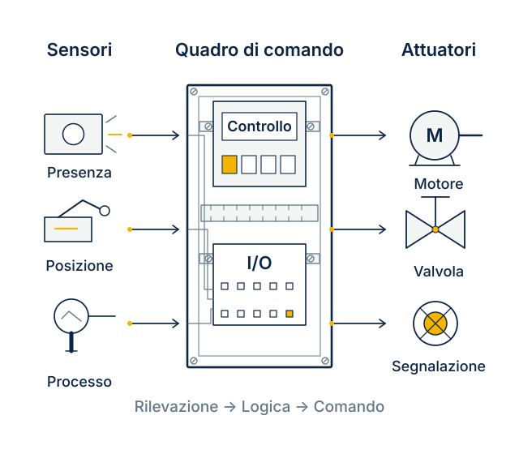

Quadri e cablaggi
bordo macchina.
Realizziamo quadri di comando e collegamenti per macchine e impianti. Lavoriamo con costruttori e integratori a partire da schemi elettrici e liste dei segnali.

Schema illustrativo, non una configurazione di fornitura.
Ogni collegamento
ha una funzione.
Le informazioni del progetto permettono di organizzare i circuiti e identificare le connessioni in campo.
- Alimentazioni
- Distribuzione verso le utenze e i circuiti ausiliari previsti dallo schema.
- Controllo e segnali
- Cablaggio dei componenti di comando e degli ingressi e uscite del sistema di controllo.
- Collegamenti in campo
- Morsettiere, cavi e identificazione delle connessioni verso sensori e attuatori.
Una fornitura
da definire insieme.
Dal solo quadro alle attività di cablaggio previste sulla macchina: indichiamo nell’offerta cosa è compreso.
Programmazione, avviamento e altre attività sull’automazione vanno concordati espressamente.
- Assemblaggio e cablaggio del quadro di comando.
- Organizzazione di morsettiere e circuiti ausiliari.
- Siglatura dei cavi e identificazione dei collegamenti.
- Cablaggio in campo, quando compreso nell’intervento.
- Controlli e documentazione previsti per la fornitura.
Raccontaci cosa
deve fare la macchina.
Indica il lavoro richiesto a Lostar e i componenti già scelti. Usa i documenti disponibili per descrivere alimentazioni, segnali e collegamenti.
- Schema elettrico della macchina
- Lista ingressi e uscite o elenco di sensori e attuatori
- Distinta e componenti da utilizzare
- Ingombri del quadro e attività di cablaggio richieste
Definiamo
il lavoro.
Il quadro è già progettato: potete realizzarlo?
La richiesta può riguardare assemblaggio e cablaggio su documentazione fornita. Allega schema, distinta e indicazioni sui componenti obbligatori.
Posso richiedere anche il cablaggio in campo?
Indicalo nella richiesta, specificando macchina, luogo e collegamenti da eseguire. L’attività viene valutata e descritta nell’offerta.
La programmazione del controllo è inclusa?
Non è implicita nella fornitura del quadro. Specifica se servono programmazione, prove con la macchina o avviamento: il perimetro deve essere concordato.
Devi intervenire su un quadro già installato?
Modifiche e collaudo